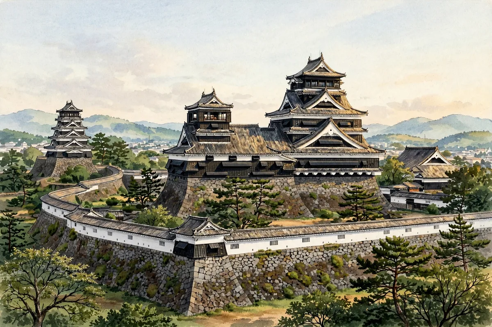

熊本城と武者返し｜加藤清正の築城術を歩く

熊本城を築いたのは、築城の名手として知られる加藤清正です。慶長年間に築かれたこの城は、難攻不落と称されました。
最大の特徴が石垣の「武者返し」です。下部は緩やかな勾配なのに、上部になるほど急に反り返るため、よじ登ろうとしても途中で返されてしまいます。熊本城では高さの違う2つの石垣が連なる「二様の石垣」も見どころです。築城時期の違いが、石垣の形そのものに残っているのです。
2016年の熊本地震では大きな被害を受けましたが、復旧が進み、天守閣は2021年に復旧を終えました。崩れた石垣を元の位置に戻す作業は、石ひとつひとつを記録して積み直す気の遠くなるような工程です。城が単なる観光地ではなく、地域の人々の心の拠り所として守られていることが伝わってきます。
訪れる際は、復旧の過程そのものも含めて見学するのがおすすめです。城の強さと、守り続ける人の思いの両方に出会えます。
このテーマの柱ページ：日本100名城コーナー｜100城の見どころと歴史を解説
この記事のおすすめ本

表紙イメージ（実際の表紙とは異なります）
PR 入門書
ゼロから分かる！ 図解日本の城入門
著者：小和田泰経
縄張・堀と石垣・天守のしくみまで、イラストでやさしく解説。城めぐり初心者が最初に持つ一冊として、検定の教科書と合わせて読むのにおすすめです。
Amazonで見る価格はAmazonでご確認ください／リンク先：Amazon.co.jp

表紙イメージ（実際の表紙とは異なります）
PR ビジュアルガイド
行った気になる！すごい名城 日本の城50
著者：香川元太郎・小和田哲男
日本各地から50の名城を、大迫力の写真と精密イラストで解説。次の城めぐりの行き先選びにも、自宅で眺めて楽しむ画報としても使えます。
Amazonで見るKindle版あり／価格はAmazonでご確認ください／リンク先：Amazon.co.jp

表紙イメージ（実際の表紙とは異なります）
PR 読み物
城好き気象予報士とめぐる名城37 天気が変えた戦国・近世の城
著者：久保井朝美
気象予報士の視点で37の名城をめぐる一冊。天気や気候が築城や戦にどう影響したかという切り口が新鮮で、城を見る目が変わります。
Amazonで見る価格はAmazonでご確認ください／リンク先：Amazon.co.jp
当サイトは、Amazon.co.jpを宣伝しリンクすることによってサイトが紹介料を獲得できる手段を提供することを目的に設定されたアフィリエイトプログラムである、Amazonアソシエイト・プログラムの参加者です。価格・在庫はリンク先でご確認ください。